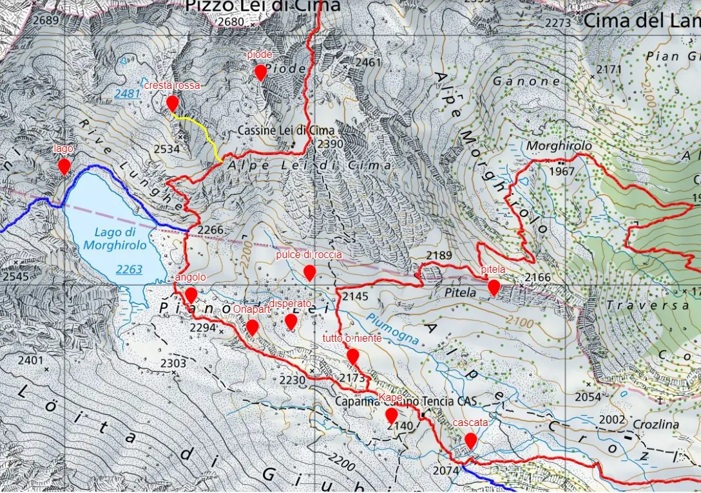

Klettern
Klettergärten wenige Minuten von der Hütte, vom III. Grad bis 6b: ideal zum Lernen.

Eine ideale Gegend, um Kindern und Anfängern das Klettern beizubringen: Rund um die Hütte wurden mehrere Klettergärten eingerichtet, vom III. Grad bis zu einigen Seillängen im 6b für Anspruchsvolle.
Der Sektor Angolo beim See ist eigens für die Felsausbildung eingerichtet: Einseillängenrouten, Abseilstellen, Abseilen im freien Hang und eine kleine, leichte Mehrseillängenroute zum Üben. Wenige Minuten von der Hütte entfernt kann man im Sektor Cascata die Manöver auf leichten, parallelen Mehrseillängenrouten trainieren, und am Block Kape gibt es einige Einseillängenrouten.
Flyer der Klettergärten (italienisch)
| Sektor | Routen | Länge | Grad | Hinweise |
|---|---|---|---|---|
| Cascata | 4 | 60 m | 3-4 | Mehrseillängen, parallel |
| Kape | 7 | 10 m | 5-6c | Einseillängen |
| Tutto o niente | 10 | 20 m | 3-5a | Einseillängen |
| Disperato | 6 | 10 m | 4-5a | |
| Onapart | 3 | 30 m | 5a-6b | |
| Pulce di roccia | 5 | 20 m | 3-4 | leichte Platten |
| Angolo | 8 | 20 m | 4-5a | Ausbildungsgelände |
| Piode | 3 | 25 m | 4-5a | |
| Pitela | 6 | 10-80 m | 3-5a | |
| Cresta rossa | 500 m | 2-4 | alpine Route | |
| Lago | 1 | 75 m | 5a |
